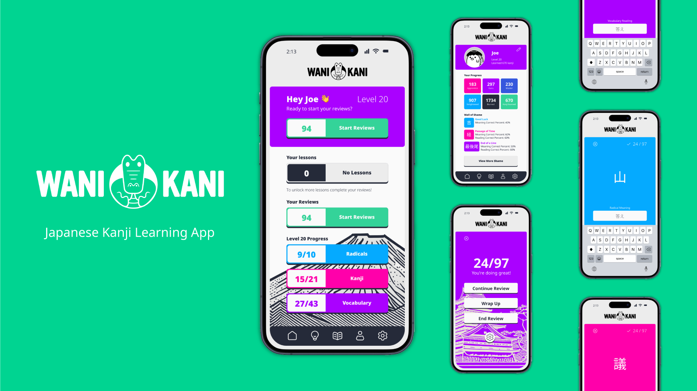
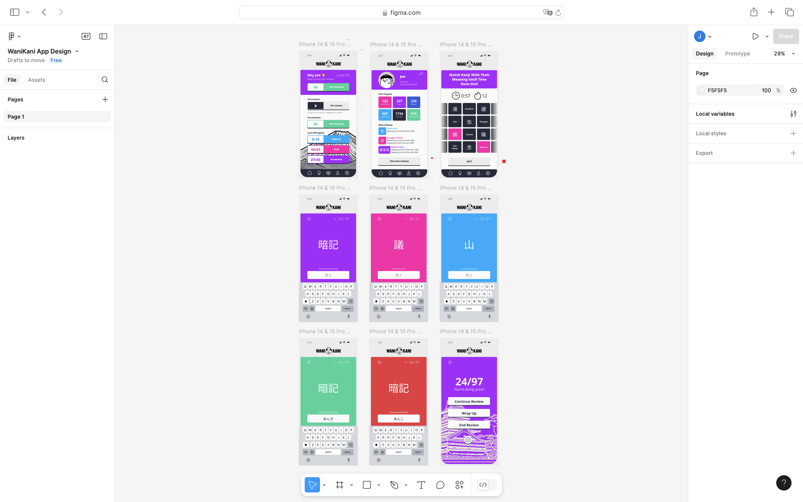

WANIKANI
KANJI LEARNING APP
WaniKani, created by Tofugu, is an online platform dedicated to helping learners master Japanese kanji and vocabulary through a mnemonic-based approach and spaced repetition system. Users progress through levels, building on previously learned material for a structured learning experience. Notably, WaniKani does not have a mobile app, prompting me to take on the challenge of designing one.
Figma
